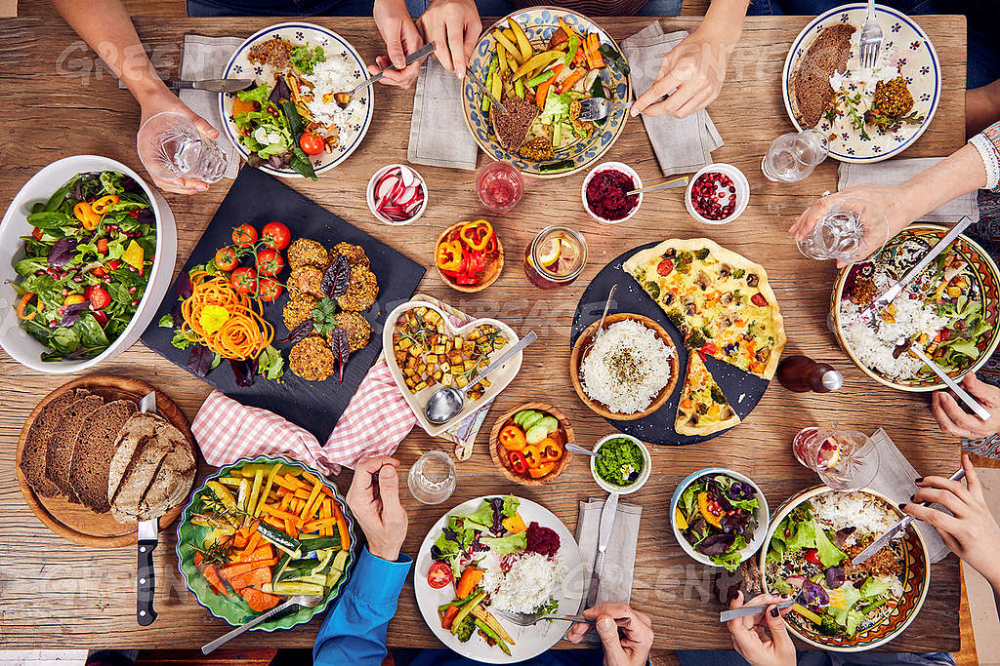

Explora por Categoría
Comidas

Platillos que conquistan el corazón y el estómago. Desde recetas tradicionales hasta opciones rápidas para el día a día, aquí encontrarás todo lo que necesitas para llenar tu mesa de sabor.
Bebidas

Refresca tus sentidos con nuestras bebidas caseras. Desde aguas frescas mexicanas hasta opciones más cremosas o frutales, aquí tienes el acompañamiento perfecto para cualquier comida… o simplemente para consentirte en cualquier momento.
Postres
Dulzura en cada cucharada. Esta categoría está hecha para quienes creen que una comida no está completa sin algo dulce. ¡El paraíso de los antojos!